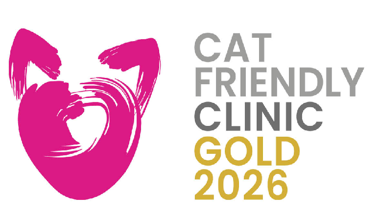
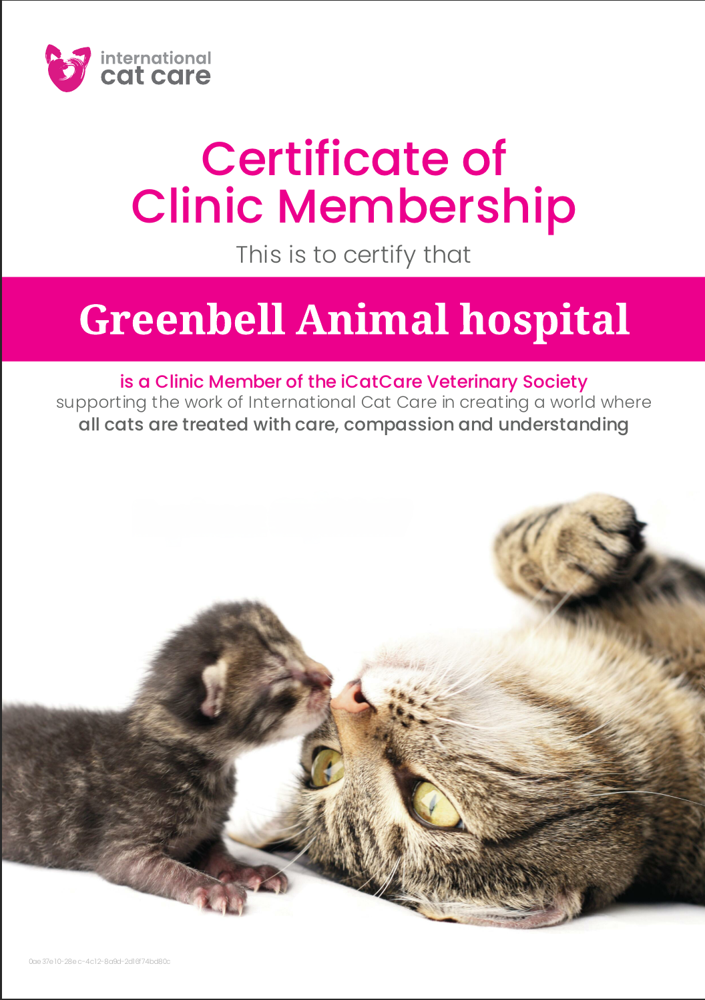
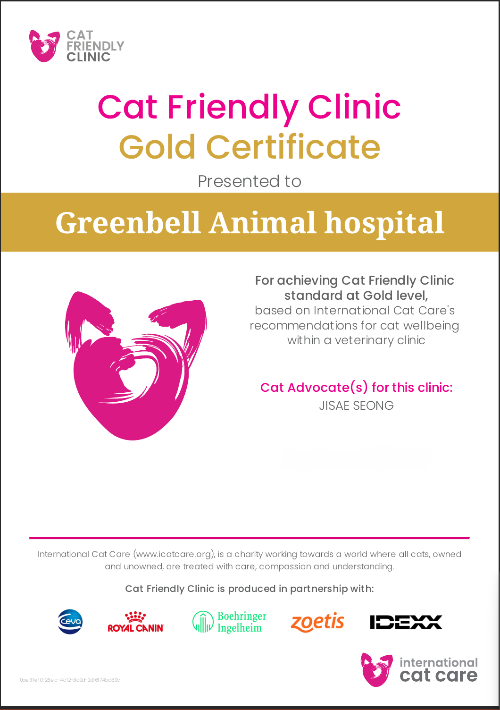
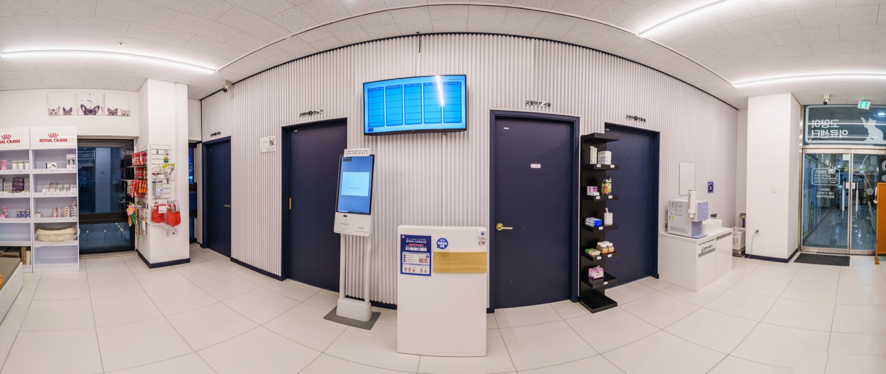
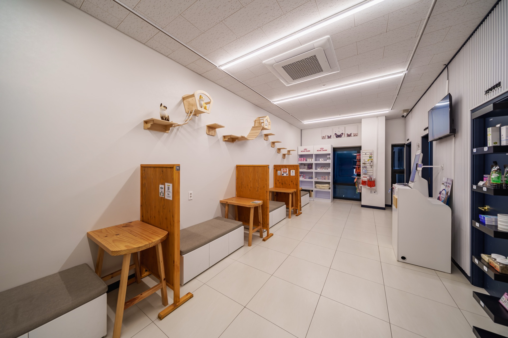
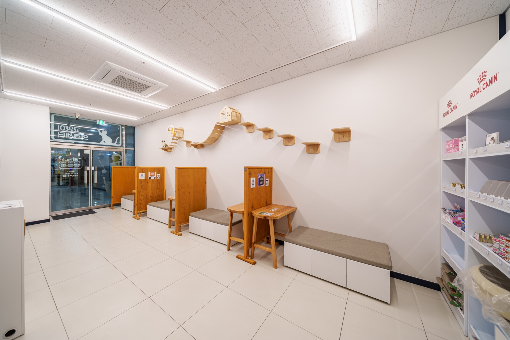
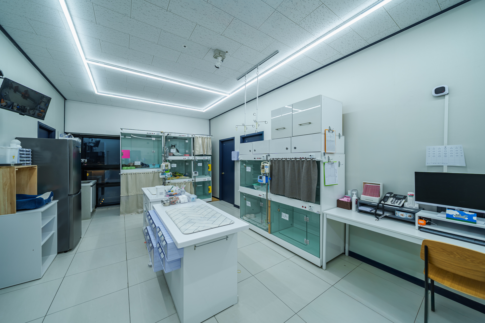
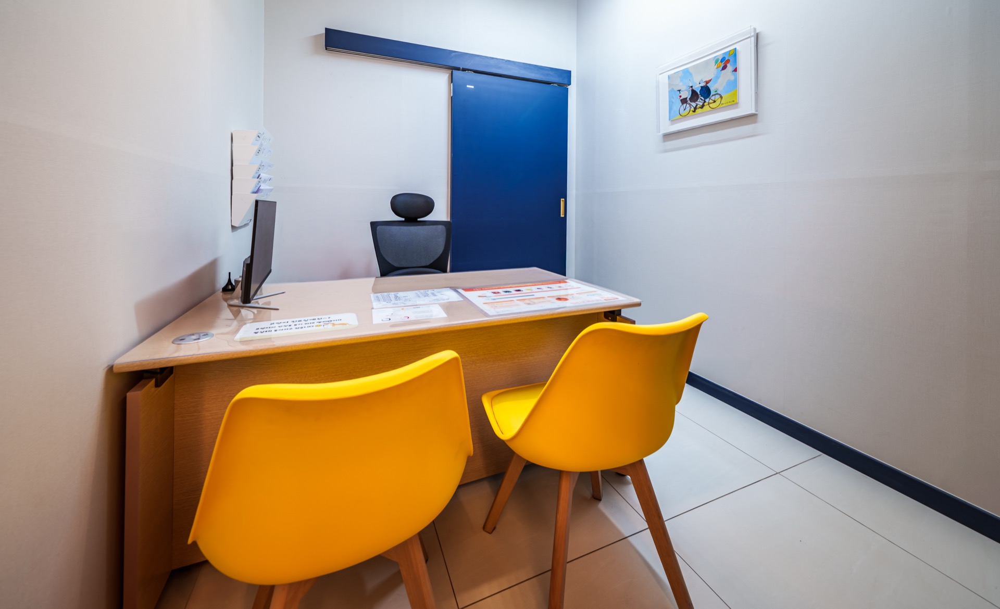
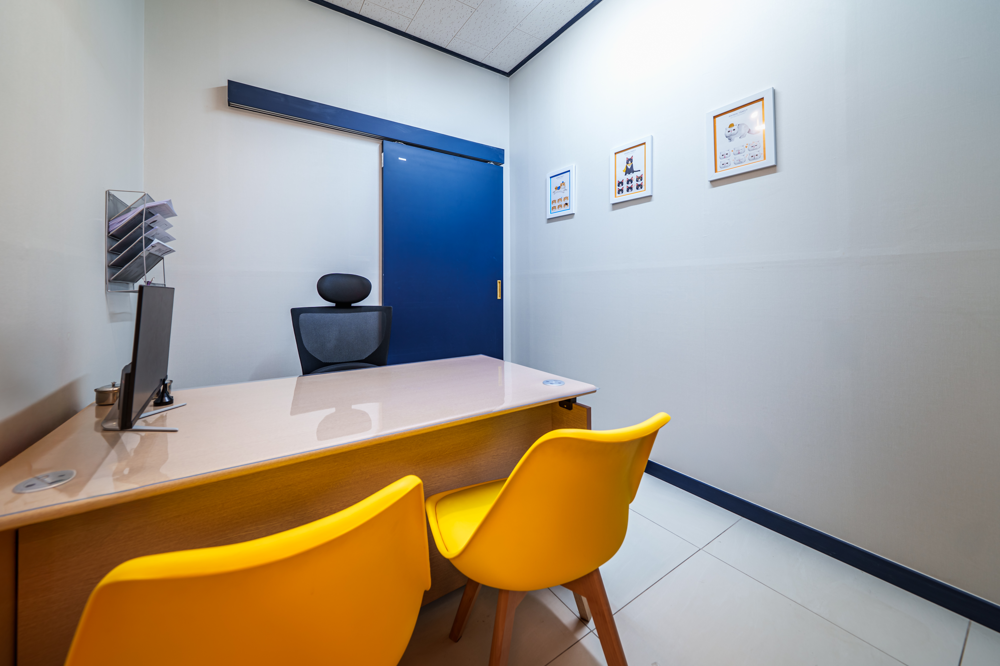
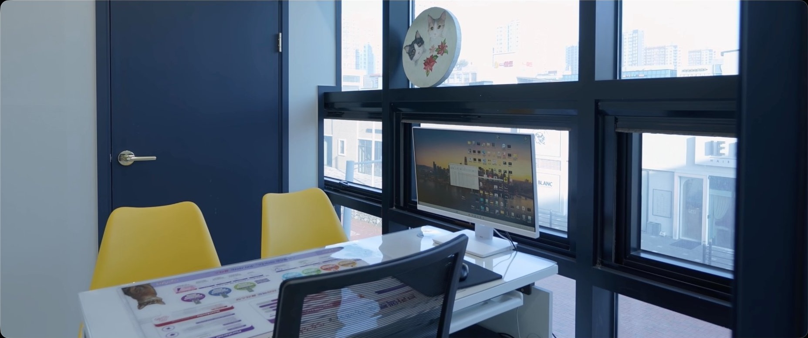

“고양이를 위해,
병원을 하나 더 만들었습니다.”
ISFM Cat Friendly Clinic Gold Level



그린벨 동물의료센터는 세계적 권위의 ISFM(세계고양이수의사회)으로부터 최고 등급인 '골드 레벨'을 인증받았습니다.
그린벨동물의료센터는 고양이 환자를 위해 별도의 공간을 확장하여 독립된 고양이 진료 환경을 구축했습니다.
단순한 공간 분리가 아닌, 고양이의 특성과 스트레스를 고려한 전용 진료 시스템을 제공합니다.
WHY CAT CENTER
고양이는 개와 전혀 다른 동물입니다. 고양이는 낯선 환경, 소리, 냄새에 매우 민감하며 이러한 스트레스는 검사 결과와 회복에도 영향을 줄 수 있습니다.
그린벨은 이러한 특성을 고려하여 고양이를 위한 진료 환경 자체를 따로 설계했습니다.
SPATIAL VIEW



OUR SYSTEM
✔ 고양이 전용 독립 공간 일반 진료 공간 내 일부 분리가 아닌, 고양이 환자를 위한 별도의 공간을 확장하여 조용하고 안정적인 환경을 제공합니다.
✔ 스트레스 최소화 진료
대기, 진료, 검사 과정에서 불필요한 자극 최소화 소음과 동선 분리를 통한 안정적인 진료 환경 고양이의 행동 특성을 고려한 진료 접근
✔ 고양이 친화 진료 철학
고양이를 억지로 다루는 방식이 아닌,고양이의 상태와 반응을 존중하는 진료를 지향합니다.
필요 시 단계적인 접근을 통해 환자의 스트레스를 최소화합니다.
SPATIAL VIEW

입원실

진료실1

진료실2

진료실3
Cat-Friendly Promise
ISFM Gold Level 인증 병원으로서 그린벨이 지켜나가는 원칙입니다.
Dog-Free Zone
내원부터 귀가까지 강아지와 마주치지 않는 독립적인 동선을 보장합니다.
Gentle Handling
강압적인 보정법 대신 고양이의 성향을 배려한 부드러운 핸들링을 시행합니다.
Cat Advocates
ISFM 가이드라인을 정기적으로 교육받는 고양이 전담 의료진이 상주합니다.
Specialized Care
고양이 전용 의료 장비와 입원실을 통해 최적의 치료 환경을 제공합니다.
MEDICAL QUALITY
환경뿐 아니라, 진료의 기준까지 다르게 봅니다
그린벨동물의료센터의 모든 수의사는
KSFM(한국고양이수의학회) 정회원으로,
고양이 진료에 대한 지속적인 교육과 최신 지식을 바탕으로 진료합니다.
단순한 경험에 의존하지 않고, 근거와 이해를 바탕으로
고양이에게 적절한 진료를 제공합니다.
FOR YOUR CAT
이런 보호자분들께 권합니다
- ✔ 병원 방문 시 스트레스를 많이 받는 고양이
- ✔ 공격성 또는 예민함으로 진료가 어려웠던 경우
- ✔ 보다 안정적인 환경에서 검사를 받고 싶은 경우
- ✔ 고양이 진료 경험이 풍부한 병원을 찾는 경우
고양이에게 병원은 낯선
공간입니다
그린벨은 그 낯섦을 줄이기 위해 고민합니다.
공간과 진료, 그리고 이해까지
모두 고양이를 기준으로 설계했습니다.